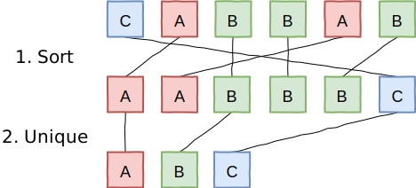
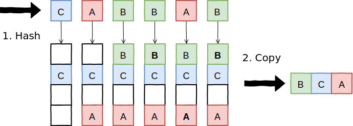
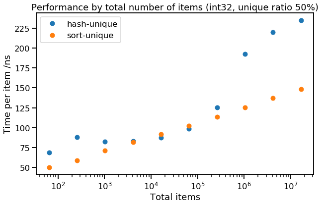
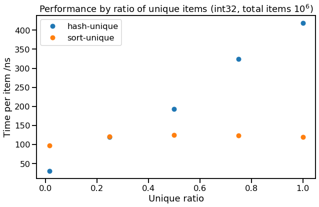

[Part 1], [Part 2]
A while back, I was trying to speed up some code which finds unique items in a collection. For example, transforming "AABBADCAB" => "ABDC". There are two ways to do this efficiently - one is based on sorting, the other based on hashing. So, which is faster? I couldn't find the answer, so I ran some experiments and here are the results.
We'll start with C++, but we'll see if these results generalise to a couple of other popular languages in part 2. We'll begin by specifying the problem more precisely.
The problem: given an array of values, create a new array of all unique values from the original (in any order). This means that for each value in the original array there is exactly one value in the uniqued result that would compare equal. For example (in C++; we'll use a std::vector for the input and output type):
auto items = std::vector<int>{10, 20, 20, 30, 10, 10};
auto results = find_unique(items);
// => {10, 20, 30}
// (or {20, 10, 30}, etc.)Although it's a very simple problem, I found the benchmarking results a bit surprising - investigating this has changed my mental model of what makes code fast or slow.
Both methods are based on the same idea: we need to collect identical items together in the same place, so we know where to look for the duplicates. One way to do this is to sort the items, after which any duplicates will now be adjacent, so we can make a second pass to scan through, removing adjacent duplicates. It looks a bit like this:

The first step is any standard sorting algorithm (e.g. quicksort). The second step is a linear scan which keeps track of the last item copied into the result as it scans through the array, and doesn't copy an item to the result if it compares equal to the last item. The C++ code to implement sort-unique is simple (mainly because std::unique already exists to implement step 2):
sort-unique
auto results = items;
std::sort(results.begin(), results.end());
auto n = std::unique(results.begin(), results.end()) - results.begin();
results.resize(n);Since we're interested in the runtime performance of our code, we can use Big O notation to try give a very rough model of how runtime will scale with data size. In Big-O, sort-unique takes $O(N)$ memory (although it can also be done in-place) and $O(N \log N)$ compute (e.g. if you count comparisons or data movement), due to the sort.
Another way to collect identical items together is to hash them, so we only have to check items that collide hash buckets to confirm that an item is new. This looks like:

In C++, you can implement hash-unique by copying the collection into a std::unordered_set and back out again:
hash-unique
std::unordered_set<T> set(items.begin(), items.end());
std::vector<T> results(set.begin(), set.end());Again in Big-O, hash-unique takes $O(N)$ memory and $O(N)$ compute (counting std::hash calls, or bucket accesses). So it looks like hashing is going to be our winner - let's see it's actually faster...
It isn't immediately obvious whether sort-unique or hash-unique would be faster for our performance-critical code. Our simple analysis (based on the number of copies, operator< or std::hash calls) said sort-unqiue was $O(N \log N)$ and hash-unique was $O(N)$, but you can't beat actually trying it out. Therefore let's try benchmarking these methods over some example inputs. We'll test things out using C++ to unique vectors of randomly sampled integers with the following variants:
Although it's unlikely any of these configurations will match any of our real problems, they should help show the trade-offs between the two approaches. Our performance results are all the median latency over 60 runs on an Ubuntu laptop [Appendix 1]. We also separately instrument the objects in the collection to count data-oriented operations (construct, copy, assign) and logical operations (operator<, operator==, std::hash).
Here's a typical result: 1 million items, 50% unique, using int32:
| method | time per item | data ops per item | logic ops per item |
|---|---|---|---|
| sort-unique | 125 ns | 17.9 | 24.7 |
| hash-unique | 193 ns | 1.00 | 1.50 |
In this instance, sort-unique is slightly faster than hash-unique, even though sort-unique is doing many more data operations (mainly move & move-assign), and logical operations (less). Clearly the bottleneck here for hash-unique isn't the object's operations - probably memory allocation and locality of access should be our top suspects for this hidden cost, but more on that later.
Things become more interesting when we look at trends:

Here we can see how performance degrades as we scale the total number of items being uniqued, while keeping the data type fixed (int32) and the proportion of unique items fixed (50%). We can see that sort-unique is faithfully obeying $O(N \log N)$ for execution time - this means that the time per item is $O(\log N)$, or a straight line on the graph above (as the x-axis is logarithmic). The runtime of hash-unique is a bit more interesting - there the runtime gets much worse approaching 1 million total items (each of which is 4 bytes), which is suspiciously close to my test machine's 4 MB of L3 cache.
We can also look at how the proportion of unique items affects performance:

Here we see how strongly hash-unique depends on the ratio of unique to total items (unique ratio = $N_{unique}/N$), whereas sort-unique doesn't seem to care. This is because the size of the hash set that hash-unique maintains scales with the number of unique items, not the total number of items, whereas the first pass of sort-unique, which dominates the workload, does not gain an advantage from duplicate items.
Finally, we didn't find that data size made much difference to performance. Small data types (e.g. uint16) were slightly faster for hash-unique, but the difference was marginal.
Altogether, the runtime of sort-unique followed the trend we expected, $O(N \log N)$, and was independent of the ratio of unique items. Hash-unique, however, takes more time for each unique item, and the runtime jumps when the hash table begins to spill out of L3 cache to main memory (our expected trend of $O(N)$ was a very poor fit to the data).
To check these observations, we tried to fit a linear predictive model to the runtime, with the features $\left[1, N, N \log(N), N_{unique}, N_{unique} \log(N_{unique})\right]$. Pruning small contributions, this gave:
$$\begin{align} t_{\textit{sort-unique}} &= 8 N \log(N) \\ t_{\textit{hash-unique}} &= 27 N_{unique} \log(N_{unique}) + 3 N \log(N)\,, \end{align}$$
which fits our observation that hash-unique has a high cost per unique item, while sort-unique has a moderate cost per item (whether unique or duplicate), and that even hash-unique fails in practice to scale better than $O(N \log N)$.
These results suggest the following extreme examples that favour hashing & sorting (with our original moderate example also repeated), again reporting the time per item in nanoseconds:
| $N$ | $N_{unique}/N$ | sort-unique | hash-unique |
|---|---|---|---|
| $2^{16}$ | $\frac{1}{16}$ | 75 ns | 21 ns |
| $2^{20}$ | $\frac{1}{2}$ | 125 ns | 193 ns |
| $2^{24}$ | $1$ | 143 ns | 517 ns |
Our results lead us to two high-level conclusions:
Use sort-unique when data size > L3, or when the proportion of unique items is high
Hash-unique suffers from very cache-unfriendly data access pattern, so gets much slower when the dataset falls out of CPU cache. Also, much of the cost of hash-unique seems to be allocation-related, so performance is worse when the proportion of unqiue items is high. In these cases, the more steady scaling of sort-unique makes it a better choice.
Computational complexity by counting logical ops can be a bad predictor of performance
We saw that sort-unique scales faithfully as $O(N \log N)$, both in terms of number of logical / data operations and in runtime. Hash-unique also scales faithfully in number of logical / data operations, $O(N)$, but scales $O(N \log N)$ in runtime.
This is because our complexity analysis ignored the effect of cache hierarchies on performance (it effectively employed a "flat cost" model for any random access to memory). This proved very unrealistic for hash-unique (even though the same model was OK for sort-unique). We don't propose a better model here, but it's a reminder to keep an eye on locality of reference when thinking about performance.
Read on... [Part 2]
Note: this includes the setup for Part 2, which includes other programming languages.
.csv.gz format), C++, Javascript, Java; see also the analysis notebookEnvironment:
CPU: i7-4510U, 2.00GHz, 2 cores, 4 MB cache
Memory: 8 GB DDR3, 1600 MT/s
OS: Ubuntu 18.04 (64 bit), in Docker
C++: gcc version 7.4.0 [flags: -O2 -std=c++17]
Javascript: Node.js v10.16.3
Java: OpenJDK 11.0.4